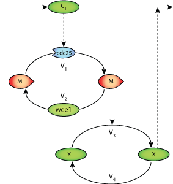

This CellML model runs in OpenCell and COR, and reproduces Figure 2 from the original paper.
ABSTRACT:We consider a minimal cascade model previously proposed ~1 for the mitotic oscillator driving the embryonic cell division cycle. The model is based on a bicyclic phosphorylation-dephosphorylation cascade involving cyclin and cdc2 kinase. By constructing stability diagrams showing domains of periodic behavior as a function of the maximum rates of the kinases and phosphatases involved in the two cycles of the cascade, we investigate the role of these converter enzymes in the oscillatory mechanism. Oscillations occur when the balance of kinase and phosphatase rates in each cycle is in a range bounded by two critical values. The results suggest ways to arrest the mitotic oscillator by altering the maximum rates of the converter enzymes. These results bear on the control of cell proliferation.
The original paper reference is cited below:
'Arresting the mitotic oscillator and the control of cell proliferation: insights from a cascade model for cdc2 kinase activation', Goldbeter, A. and Guilmot, J.-M. 1995, Experientia, 15, 212-216. PubMed ID: 8631387
|  |
| Minimal cascade model for the mitotic oscillator |